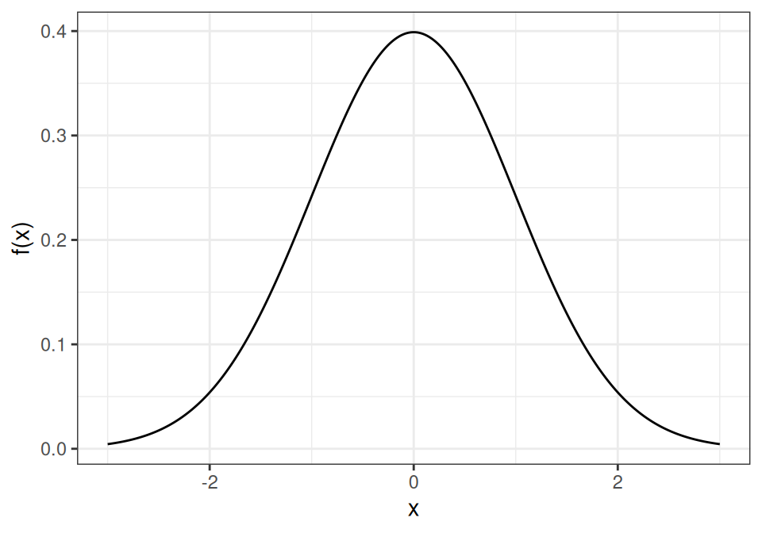
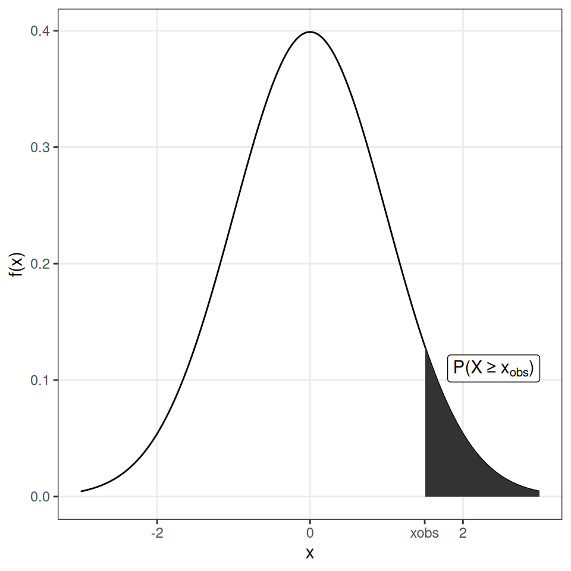
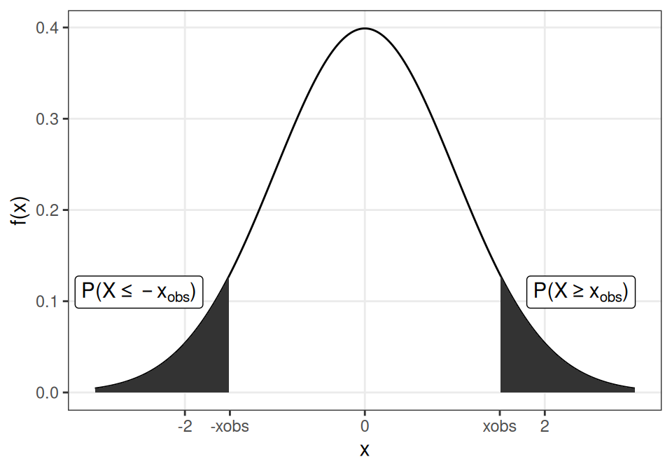
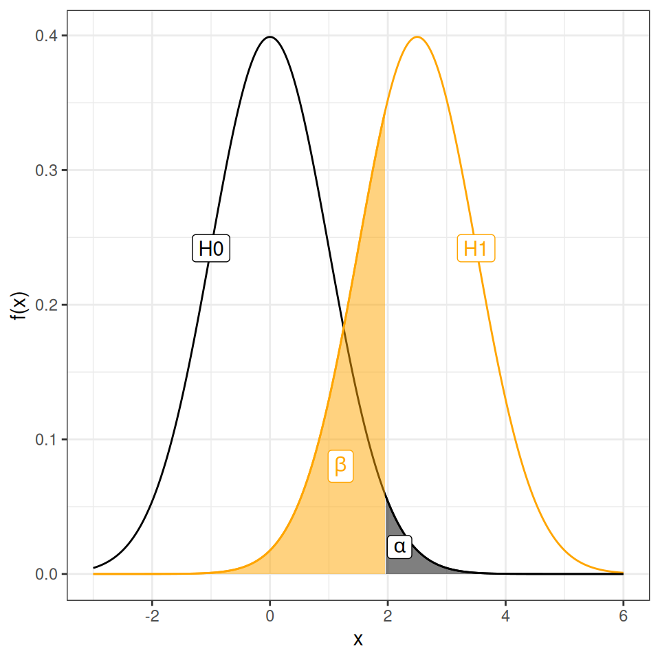

5 Introduction to hypothesis tests
Statistical inference is the process of drawing conclusions about properties of a population based on observations from a random sample.
A hypothesis test is a type of statistical inference used to evaluate if a hypothesis about a population is supported by the observations of a random sample (i.e by the data available).
Typically, the hypotheses that are tested are assumptions about properties of the population, such as proportion, mean, mean difference, or variance. For example, a hypothesis test can be used to assess if the population mean is greater than 0.
In summary, a hypothesis test involves defining a null and alternative hypothesis, selecting an appropriate test statistic and computing the observed value of this statistic. Finally, the probability of the observed value, or something more extreme, if the null hypothesis is true is computed. Based on this probability and a predefined significance level, the null hypothesis is either rejected or not rejected.
5.1 The null and alternative hypothesis
There are two hypotheses involved in a hypothesis test, the null hypothesis \(H_0\) and the alternative hypothesis \(H_1\).
The null hypothesis is in general neutral; “no change”, “no difference between the groups”, “no association”. In general we want to show that \(H_0\) is false.
The alternative hypothesis expresses what the researcher is interested in. Depending on the research question, the alternative hypothesis can be two-sided or one-sided. A two-sided alternative hypothesis is non-directional, such as “the treatment has an effect”, “there is a difference between the groups”, “there is an association”, while a one-sided alternative hypothesis is directional, such as “the treatment has a positive effect”.
5.2 To perform a hypothesis test
- Define \(H_0\) and \(H_1\)
- Select an appropriate significance level, \(\alpha\)
- Select an appropriate test statistic, \(T\), and compute the observed value, \(t_{obs}\)
- Assume that \(H_0\) is true and compute the sampling distribution of \(T\) under \(H_0\).
- Compare the observed value, \(t_{obs}\), with the computed sampling distribution under \(H_0\) (the null distribution) and compute a p-value.
- Based on the p-value, either reject or fail to reject \(H_0\).
The sampling distribution is the distribution of a sample statistic, such as a sample mean or sample proportion. The sampling distribution can be described theoretically or approximated by repeatedly drawing samples from a population.
A null distribution is the sampling distribution of a test statistic when the null hypothesis is true.
5.3 The p-value
The p-value is the probability of observing a value of the test statistic at least as extreme as the observed value, if \(H_0\) is true.
The p-value is not the probability that \(H_0\) is true.


5.4 Significance level and error types
A hypothesis test is used to draw inferences about a population based on a random sample. The conclusion drawn from a hypothesis test may of course be wrong. There are two types of errors:
Type I error: rejecting \(H_0\) when it is true. This is also called a false positive or a false alarm. Examples: “The test says that you are covid-19 positive, when you actually are not”, “The test says that the drug has a positive effect on patient symptoms, but it actually has not”.
Type II error: failing to reject \(H_0\) when it is false. This is also called a false negative or a miss. Examples: “The test says that you are covid-19 negative, when you actually have covid-19”, “The test says that the drug has no effect on patient symptoms, when it actually has”.
| Decision | H₀ is true | H₀ is false |
|---|---|---|
| Fail to reject H₀ | Correct decision | Type II error (miss) |
| Reject H₀ | Type I error (false alarm) | Correct decision |
The probabilities of type I and type II errors are denoted \(\alpha\) and \(\beta\), respectively.
\[\alpha = P(\text{type I error}) = P(\text{false alarm}) = P(\text{Reject }H_0 \mid H_0 \text{ is true})\] \[\beta = P(\text{type II error}) = P(\text{miss}) = P(\text{Fail to reject }H_0 \mid H_1 \text{ is true})\]
The significance level, \(\alpha\), is the probability of a type I error, i.e., the probability of rejecting \(H_0\) when it is true. In other words, it is the risk of false alarm, i.e., to say “I have a hit”, “I found a difference”, when the null hypothesis (“there is no difference”) is true.

The risk of false alarm is controlled by setting the significance level to a desired value. We usually want to keep the risk of false alarm (type I error) low, but making \(\alpha\) smaller increases the risk of missing a true effect (type II error), unless the sample size is increased.
The significance level should be set before the hypothesis test is performed. Common values to use are \(\alpha=0.05\) or 0.01.
If the p-value is above the significance level, \(p>\alpha\), \(H_0\) is not rejected.
If the p-value is below the significance level, \(p \leq \alpha\), \(H_0\) is rejected.
Another property of a statistical test is the statistical power, defined as
\[\text{power} = 1 - \beta = P(\text{Reject }H_0 \mid H_1\text{ is true}).\]
High power means that the test is likely to detect a true effect if it exists. The power of a test can be increased by increasing the sample size or by increasing the significance level, \(\alpha\).